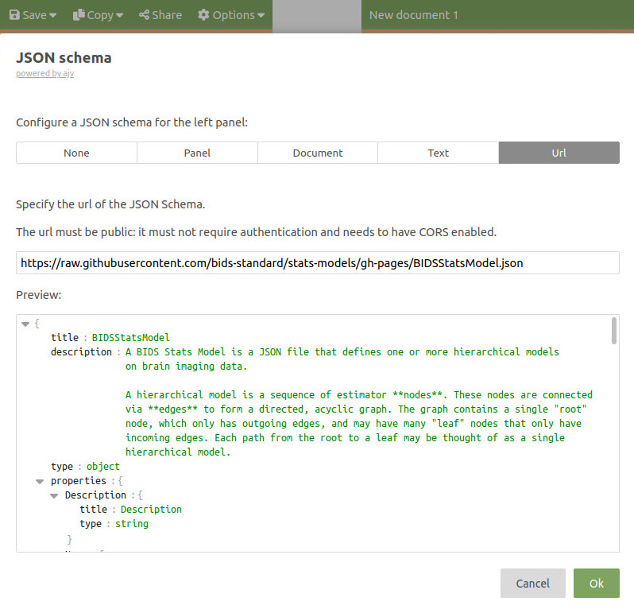

JSON 101
Contents
JSON 101#
The BIDS statistical models are written in JSON files.
If you have never heard of JSON, this section is for you.
Here we will quickly:
explain some of the terms that you need to be familiar to work with JSON
suggest some tools that you may want to use to make it easier for you to work with JSON.
JSON terms#
JSON stands for JavaScript Object Notation and as its name indicates takes its syntax from the JavaScript language.
The main “building blocks” of JSON you must be familiar with are Objects and Arrays.
Objects#
In JSON, objects
are opened and closes by curly brackets
{ }are a collection of key–value pairs where:
the keys are strings
the key and the value are separated by a colum
:
For example, this is an object.
{ "Key": "value", "Key2": 1 }
As you can see, in JSON strings start and end with double quotes ".
Also note the comma between the key-value pairs but not after the last key-value pair.
Arrays#
In JSON, arrays are:
are opened and closes by square brackets
[ ]an ordered list of zero or more elements, each of which may be of any type (string, number..)
elements must be separated by a comma
["this", "is", 1, "JSON", "array"]
A note on Booleans#
In JSON boolean values must be typed as lowercase with no quotes:
truefalse
JSON “styling”#
In JavaScript it is custom to use CamelCase to write code, this is why most of keys you will see in JSON are also in CamelCase.
For example:
{ "ThisIsTrue": true, "ThisIsTrue": false }
It is common to indent JSON files to help human readibility.
{
"ThisIsTrue": true,
"ThisIsTrue": false
}
Finally, you cannot add comments in JSON files,
but the BIDS stats model allows you to add a "Description" key
to most objects to give explanations to the reader.
Nesting#
JSON allows to “nest” objects within objects, to create arrays of objects and combine all those elements however deep you want or need.
Just remember to place commas:
between array elements
between key-value pairs
unless this is the last element (or key-value pair)
{
"MixedArray": ["This", "is", "one", "array"],
"ArrayOfNumbers": [0, 0, 1, 0, 0],
"ArrayOfObjects": [
{
"NestedObject": true,
"Content": { "value": 0 }
},
{
"NestedObject": false,
"Content": 1
}
]
}
JSON schema#
If the content of your JSON must follow certain rules, like
your JSON file must contain a key-value pair
with a key called: “Version”
with a value that must be a number
Then you can specify those rules in what is called a JSON schema.
Working with JSON#
In the browser#
Working with JSON can be a headache if you do not have the proper tools.
To get started we suggest playing around with JSON in an online editor, to get a feeling for how JSON works.
See for example this one: http://jsoneditoronline.org/
Online editors can also usually tell you if you forgot a comma, forgot to close a bracket or something similar. And even fix mistakes for you.

If you directly want to edit you BIDS stats model JSON in the browser,
you can also use the BIDS stats model JSON schema by clicking Options --> JSON schema --> URL
and give it this URL:
https://bids-standard.github.io/stats-models/BIDSStatsModel.json
On your computer#
If you need to edit JSON files on your computer, it will make your life easier if you use a modern code editor like:
Modern code editors can tell you if you have a valid JSON file and highlight the lines where you have errors. Most of them usually also have code formatting extensions that can automatically indent your JSON like Prettier for vscode
You can also validate the BIDS stats model as you are creating it:
by adding the following key-value pair in your BIDS stats model,
"$schema": "https://raw.githubusercontent.com/bids-standard/stats-models/gh-pages/BIDSStatsModel.json",
For vs-code you can also add this to your settings:
"json.schemas": [
{"fileMatch": [
"model-*_smdl.json"
],
"url": "https://raw.githubusercontent.com/bids-standard/stats-models/gh-pages/BIDSStatsModel.json"
}
]
Source: https://code.visualstudio.com/docs/languages/json#_json-schemas-and-settings
Example of JSON syntax error and BIDS stats model schema error in VS code: